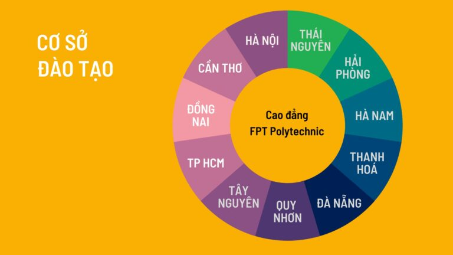

Trường Cao đẳng FPT Polytechnic được thực hiện đào tạo và cấp bằng theo Quyết định của Tổng cục dạy nghề bắt đầu từ ngày 01/07/2010. Trường hướng tới mục tiêu cung cấp kỹ năng nghề nghiệp chất lượng cao cho người học, đảm bảo được tính cạnh tranh trong môi trường phát triển ngày càng cao.
Với nhận định nền kinh tế Việt Nam đang phát triển mạnh mẽ trong đó có sự đóng góp to lớn từ trên 500.000 doanh nghiệp vừa và nhỏ quy mô từ 10 đến 200 nhân viên, FPT Polytechnic nhắm tới mục tiêu cung cấp nguồn nhân lực được đào tạo tốt cho nhu cầu phát triển của không chỉ các doanh nghiệp lớn mà còn cho các doanh nghiệp này.
Hướng tới người học chung trên toàn Việt Nam, chương trình cao đẳng của trường được thiết kế dựa trên những kỹ năng thiết yếu nhất để làm việc và tương thích với các hệ thống đào tạo tiên tiến trên thế giới.
Trường Cao đẳng FPT Polytechnic là trường đào tạo trong lòng doanh nghiệp với đa ngành nghề, đa lĩnh vực. FPT Polytechnic ra đời với mong muốn đem đến cho người học những giá trị đào tạo thực tế đúng với triết lý “Thực học – Thực nghiệp”.
Các chương trình đào tạo tại Trường Cao đẳng FPT Polytechnic được thiết kế theo chuẩn quốc tế như: tiêu chuẩn nghề ASEAN, tiêu chuẩn nghề Du lịch Việt Nam VTOS.
Nhà trường áp dụng phương pháp học Project-based Learning (Học tập qua dự án thật) và phương pháp giảng dạy Blended Learning (Học tập tích hợp), cung cấp cho sinh viên tới 70% thời gian là thực hành, trải nghiệm môi trường học sát với thực tế. Thông qua các dự án với doanh nghiệp, các dự án theo nhóm, sinh viên có cơ hội trao đổi, gặp gỡ với những chuyên gia trong nghề ngay từ khi còn ngồi trên ghế nhà trường. Bên cạnh những kiến thức nền tảng, sinh viên còn được trang bị những kỹ năng thiết yếu của thế kỷ 21 như: Kỹ năng mềm, tin học, ngoại ngữ, làm việc nhóm, kỹ năng thuyết trình…
Trường Cao đẳng FPT Polytechnic hiện có mối quan hệ hợp tác với hơn 2000 doanh nghiệp trên cả nước, sẵn sàng giới thiệu và hỗ trợ sinh viên tham gia thực tập và làm việc ngay từ khi còn đi học. Sinh viên theo học tại trường được tham gia các hoạt động ngoại khoá, sự kiện tầm cỡ, gỡ những ca sĩ hàng đầu như Sơn Tùng M-TP, Đen, Hoàng Thuỳ Linh, Trúc Nhân, Đức Phúc, DaLAB, AMEE, Soobin Hoàng Sơn, Đức Phúc – Hoà Minzy – Erik, Thuỳ Chi, Bích Phương… thậm chí là DJ Top 4 thế giới Alok, chị đại Kpop Jessi.
Thời gian đào tạo ngắn, 2 năm theo học tại trường tương đường với 2 năm kinh nghiệm làm việc thực tế với các dự án. Theo thống kê của bộ phận Quan hệ doanh nghiệp, 97,7% sinh viên FPT Polytechnic có việc làm trong vòng 1 năm sau khi tốt nghiệp với mức lương cạnh tranh.
Trường Cao đẳng FPT Polytechnic đang có mặt tại 11 tỉnh/thành phố trên cả nước.
CAO ĐẲNG ANH QUỐC BTEC FPT
Cao đẳng Anh Quốc BTEC FPT được thành lập trên cơ sở liên kết giữa Tổ chức giáo dục FPT Education và Tổ chức giáo dục và khảo thí Pearson – Vương Quốc Anh, được công nhận là trường đào tạo chính thức chương trình BTEC HND tại Việt Nam.
BTEC FPT hướng đến triển khai chương trình nghề nghiệp bậc cao đẳng chuẩn Anh Quốc, đồng thời là chương trình cầu nối với chi phí thấp đến các trường đại học hàng đầu tại Anh, Mỹ, Úc, Singapore, Nhật Bản… cũng như các trường đại học tại Việt Nam; Đào tạo nguồn nhân lực chất lượng cao các chuyên ngành Công nghệ thông tin, Quản trị kinh doanh, Thiết kế đồ họa và các khối ngành khác cho giai đoạn hội nhập toàn cầu.
Là chương trình đào tạo liên kết với Anh Quốc, Cao đẳng Anh Quốc BTEC FPT mang sứ mệnh là cầu nối cho sinh viên Việt Nam được tiếp cận với chương trình đào tạo quốc tế, nền giáo dục tiến bộ và đẳng cấp trên thế giới. Đào tạo chương trình chuẩn quốc tế. Đào tạo toàn diện, đặc biệt chú trọng kỹ năng ngoại ngữ và phát triển kỹ năng nghề nghiệp, đưa công nghệ thông minh, đặc biệt là trí tuệ nhân tạo (AI) và các thành tựu khoa học vào giảng dạy.
MELBOURNE POLYTECHNIC
Năm 2022, Melbourne Polytechnic (Australia) chính thức ký kết hợp tác
đào tạo với Tổ chức Giáo dục FPT (FPT Education – FPT Polytechnic),
thành lập Melbourne Polytechnic tại Việt Nam. Theo đó, học sinh khi trở
thành sinh viên của Melbourne Polytechnic Việt Nam sẽ được đào tạo với
chương trình chuẩn Úc, 100% học tập trong nước và sau khi tốt nghiệp,
sinh viên sẽ được nhận bằng Cao đẳng do Melbourne Polytechnic Úc cấp.
Đây là một trong những ưu điểm dành cho sinh viên Việt Nam, mở ra cho
sinh viên cơ hội việc làm trong môi trường chuyên nghiệp, được tiếp xúc
và làm việc trong các doanh nghiệp đa quốc gia hoặc các tập đoàn lớn.
Chương trình đào tạo của Melbourne Polytechnic Việt Nam sẽ có 2 chuyên
ngành chính là: Marketing – Truyền thông và Thiết kế đồ họa – Sáng tạo
sản phẩm.

Phổ thông Cao đẳng – FPT Polytechnic (PTCĐ FPT) là tên chương trình đào tạo nghề nghiệp của Trường Cao đẳng FPT Polytechnic, với đối tượng tuyển sinh là học sinh tốt nghiệp trung học cơ sở có nhu cầu học nghề sớm, theo chủ trương phân luồng học sinh sau trung học cơ sở được cụ thể hóa trong đề án Giáo dục hướng nghiệp và định hướng phân luồng học sinh trong giáo dục phổ thông giai đoạn 2018-2025 được Thủ tướng phê duyệt theo quyết định số 522/QĐ-TTg.
Học sinh tốt nghiệp trung học cơ sở khi được tuyển sinh, ngoài học các môn chuyên ngành sẽ được học 4 môn văn hóa phổ thông theo khung kiến thức quy định trong thông tư TT15/2022/TT-BGDĐT của Bộ Giáo dục và Đào tạo. Sau khi tốt nghiệp hệ trung cấp, học sinh sẽ học chuyển tiếp lên cao đẳng tuân thủ Thông tư số 27/2017/TT-BLĐTBXH của Bộ trưởng Bộ Lao động-Thương binh và Xã hội quy định đào tạo liên thông giữa các trình độ trong giáo dục nghề nghiệp.
Phổ thông Cao đẳng FPT Polytechnic chính thức thành lập từ năm 2019 với cơ sở đầu tiên tại Hà Nội. Chỉ sau 5 năm đã đạt 27 cơ sở trên toàn quốc.
1 bình luận
Huy
Em đang học tại cơ sở tp Hồ Chí Minh em có thể chuyển cơ sở tại Đà Nẵng được không ạ
1-2 năm
Cao đẳng FPT Polytechnic
Chào em. Sinh viên có thể chuyển cơ sở khi hết kỳ em nha. Em liên hệ phòng dịch vụ sinh viên nhé